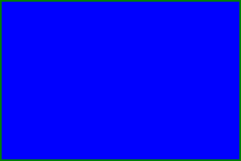

<!-- 
    SVG <svg>
    
    é uma marcação estilo html, usada para fazer imagens.

    Possui elementos para gerar formas

    Para entender melhor:
    -imagem rasterizada x imagem vetorizada

    benefícios
    -mais leve
    -mais detalhada
    -maior acessibilidade e SEO
    -pode ser editada via CSS ou atributos

    desvantagens
    -pode ser mais complicado de trabalhar
    -quanto mais complexa a imagem, mais trabalho para o navegador
    -navegadores mais antigos não possuem suporte para essa tag

    Para fotografias, ainda prefira usar imagens rasterizadas.
    -se for uma opção usar, utilizar programas para auxiliar, exemplo: figma
-->

<svg style="background-color:blueviolet" width="100" height="100">
    <circle cx="50" cy="50" r="40" stroke="green" stroke-width="4" fill="yellow" />
</svg>

